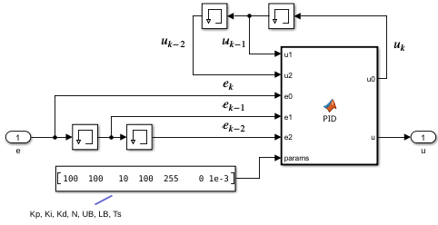
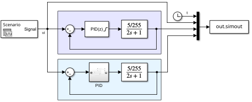

Digital PID Control - Part 1¶
Required imports¶
from IPython.core.display import HTML
from sympy import *
from mathprint import *
Define symbols¶
Kp, Ki, Kd = symbols('K_p K_i K_d', positive=True)
Ts, N = symbols('T_s N', positive=True)
s = symbols('s', complex=True)
z = symbols('z')
e, u = symbols('e u')
e0, e1, e2 = symbols('e_k e_{k-1} e_{k-2}')
u0, u1, u2 = symbols('u_k u_{k-1} u_{k-2}')
Continuous-time PID¶
Let us start with defining our PID control in a continuous form. Here, we are going to follow MATLAB Simulink implementation. In Simulink, the derivative term is a first-order low-pass filter.
where:
\(K_p\) is the proportional gain
\(K_i\) is the integral gain
\(K_d\) is the derivative gain
\(e(t)\) or \(E(s)\) is the input to the controller, which is the error between the target and the actual output of the system
\(u(t)\) or \(U(s)\) is the computed control signal that will be sent to the system
Discrete-time PID¶
Let us use the buliear transform method for both the integral term and the derivative term.
Gpid = Kp + Ki/s + Kd*s # PID-control
mprint("G_{PID}=", latex(Gpid))
Gpid = Gpid.subs(1/s, Ts/2 * (z+1)/(z-1) )
mprint("G_{PID}=", latex(Gpid))
Gpid = factor(Gpid)
Gpid = collect(numer(Gpid), [z**2, z]) / collect(expand(denom(Gpid)), [2*Ts])
mprintb("G_{PID}=", latex(Gpid))
eq = Eq(u, Gpid * e)
mprint("\\small ", latex(eq))
eq = Eq(numer(eq.rhs), eq.lhs * denom(eq.rhs))
mprint("\\small ", latex(eq))
eq = expand(Eq(eq.lhs/z**2/Ts/2, eq.rhs/z**2/Ts/2))
mprint("\\small ", latex(eq))
eq = eq.subs(e/z**2, e2).subs(e/z, e1).subs(e, e0).subs(u/z**2, u2).subs(u/z, u1).subs(u, u0)
mprint("\\small ", latex(eq))
eq_ = Eq(collect(eq.rhs, [u0, u1, u2]), collect(expand(eq.lhs), [e0, e1, e2]))
mprintb("\\small ", latex(eq_))
Continuous-time “PID with derivative filter”¶

Let us start with defining our PID control in a continuous form. Here, we are going to follow MATLAB Simulink implementation. In Simulink, the derivative term is a first-order low-pass filter.
where:
\(K_p\) is the proportional gain
\(K_i\) is the integral gain
\(K_d\) is the derivative gain
\(N\) is the filter coefficient
\(e(t)\) or \(E(s)\) is the input to the controller, which is the error between the target and the actual output of the system
\(u(t)\) or \(U(s)\) is the computed control signal that will be sent to the system
As for the discretization methods, we will use the tarpezoidal (bilinear transform or Tustin) metod. From this point onwards, let us introduce \(T_s\) as the sampling period of the discrete-time PID control.
Discrete-time “PID with derivative filter”¶
Let us use the buliear transform method for both the integral term and the filter.
Gpid = Kp + Ki/s + Kd*N/(1+N/s) # PID-control
mprint("G_{PID}=", latex(Gpid))
Gpid = Gpid.subs(1/s, Ts/2 * (z+1)/(z-1) )
mprint("G_{PID}=", latex(Gpid))
Gpid = factor(Gpid)
Gpid = collect(numer(Gpid), [z**2, z]) / collect(expand(denom(Gpid)), [z**2, z])
mprintb("\\small ", "G_{PID}=", latex(Gpid))
Now, let us apply the input to the output and turn the transfer function into algorithm (or difference equation).
eq = Eq(u, Gpid * e)
mprint("\\small ", latex(eq))
eq = Eq(numer(eq.rhs), eq.lhs * denom(eq.rhs))
mprint("\\small ", latex(eq))
eq = expand(Eq(eq.lhs/z**2/Ts/N/8, eq.rhs/z**2/Ts/N/8))
mprint("\\small ", latex(eq))
eq = eq.subs(e/z**2, e2).subs(e/z, e1).subs(e, e0).subs(u/z**2, u2).subs(u/z, u1).subs(u, u0)
mprint("\\small ", latex(eq))
eq_ = Eq(collect(eq.rhs, [u0, u1, u2]), collect(expand(eq.lhs), [e0, e1, e2]))
mprintb("\\small ", latex(eq_))
Comparison with Simulink¶
The following figure will be our general PID subsytem, where we can implement the discrete PID algorithm inside the MATLAB function block.

The MATLAB function below has already been equipped with an integral windup prevention (clamping method):
function [u0, u] = PID(u1, u2, e0, e1, e2, params)
% u1 is u(k-1)
% u2 is u(k-2)
% e0 is e(k)
% e1 is e(k-1)
% e2 is e(k-2)
Kp = params(1);
Ki = params(2);
Kd = params(3);
N = params(4);
UB = params(5); % lower-bound value for the saturated output
LB = params(6); % upper-bound value for the saturated output
Ts = params(7);
NTs = N * Ts;
% PID
E0 = Kd/(2*Ts) + Ki*Ts/8 + Ki/(4*N) + Kp/4 + Kp/(2*NTs);
E1 = -Kd/Ts + Ki*Ts/4 - Kp/NTs;
E2 = Kd/(2*Ts) + Ki*Ts/8 - Ki/(4*N) - Kp/4 + Kp/(2*NTs);
lhs = (-1/NTs) * u1 + (-1/4 + 1/(2*NTs))*u2;
rhs = E0 * e0 + E1 * e1 + E2 * e2;
u_pid = (rhs - lhs) / (1/4 + 1/(2*NTs));
% With disabled integrator, Ki = 0
E0 = Kd/(2*Ts) + Kp/4 + Kp/(2*NTs);
E1 = -Kd/Ts - Kp/NTs;
E2 = Kd/(2*Ts) - Kp/4 + Kp/(2*NTs);
lhs = (-1/NTs) * u1 + (-1/4 + 1/(2*NTs))*u2;
rhs = E0 * e0 + E1 * e1 + E2 * e2;
u_pd = (rhs - lhs) / (1/4 + 1/(2*NTs));
if u_pid > UB
u = UB;
u0 = u_pd;
elseif u_pid < LB
u = LB;
u0 = u_pd;
else
u = u_pid;
u0 = u_pid;
end
For testing, we will use the following Simulink program:

As shown in the figure, as our plant, we use a first order system: \(\frac{5/255}{2s+1}\). Identical control parameters are used for the testing.
The result is as follows:
Downloads¶
MATLAB version: R2024b